Module 3
Module Overview
The Numerical Analysis module introduces the mathematical and statistical foundations required for data science and Artificial Intelligence. The module focuses on developing the ability to critically evaluate a range of mathematical and statistical methodologies, with all statistical techniques and data analysis performed using the R programming language.
Unit 1 – Types and Sources of Data and an Introduction to R
Learning Outcomes
- Run the R programming language, and the RStudio GUI (via Google Colab).
- Identify the difference between Descriptive and Inferential Statistics.
- Define and apply nominal, ordinal, interval and ratio measurement scales.
- Determine levels of measurement in R.
- Understand R functions to perform descriptive statistics analysis.
Learning Activities
- Set up an R environment using Google Colab (configured to R runtime).
- Practised R fundamentals: variables, data types (
class()), and vectors (c()). - Studied Descriptive vs. Inferential Statistics, and the "Big Picture of Statistics" framework (Population, Sample, Statistics, Parameters).
- Explored the four levels of measurement (Nominal, Ordinal, Interval, Ratio) with R examples using
factor(). - Studied measures of location (mean, mode, median) and measures of dispersion (range, IQR, variance, standard deviation), including the distinction between Population Variance (σ², divided by N) and Sample Variance (S², divided by n−1, Bessel's Correction).
- Completed Data Activity 1 using the COVID-19 India dataset (January–March 2020).
Artefacts
COVID-19 India Dataset Exploration (Data Activity 1)
Loaded and explored a real-world COVID-19 dataset (India, January–March 2020)
using R in Google Colab. Key R functions applied included read.csv(),
ncol(), nrow(), names(), str(),
unique(), length(), as.Date(),
range(), table(), and sort().
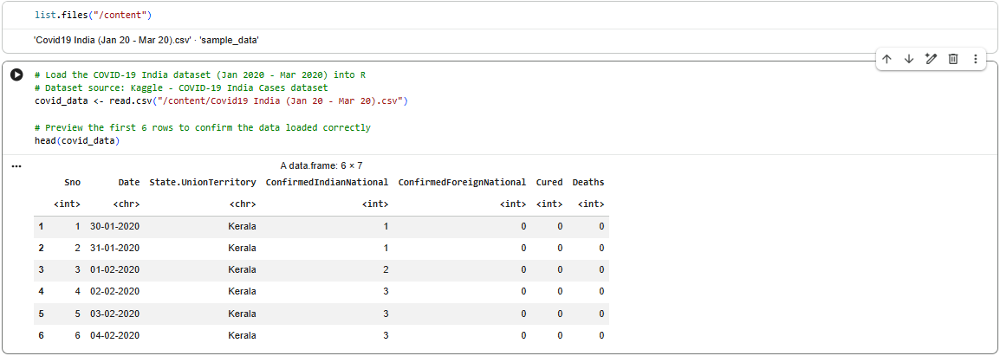
Key findings:
- Dataset structure: 7 variables, 270 observations.
- 27 unique states/union territories represented.
- Date range: 30 January 2020 – 21 March 2020.
- Kerala was the most frequently recorded state (52 entries).
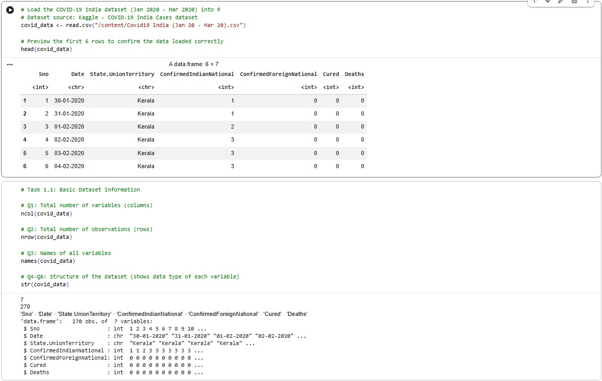
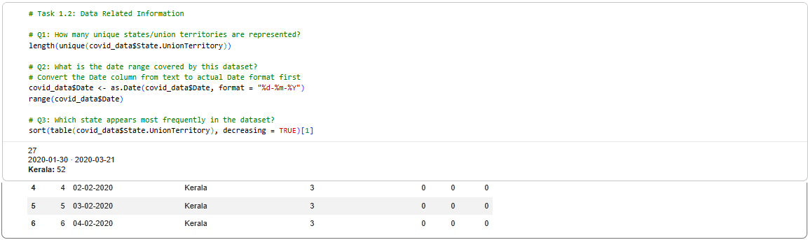
Reflection
This unit built my foundational understanding of statistics and R programming. I learned to distinguish between descriptive and inferential statistics through the "Population–Sample–Statistics–Parameters" framework, and understood why sample variance uses (n−1) as a correction for estimating population variance. Applying these concepts practically in R, using a real COVID-19 dataset, helped me connect theoretical statistical concepts with hands-on data exploration — from checking data types and structure to identifying patterns such as the most frequently recorded state.
Unit 2 – Data Structures in R
Learning Outcomes
- Understand different types of Data Structures in R.
- Start to perform basic algorithms using R.
- Explain data frames and various operations on data frames in R.
Learning Activities
- Studied the six core data structures in R: Vectors, Matrices, Lists, Data Frames, Factors, and Arrays.
- Practised basic arithmetic operators in R (
+,-,*,/,%/%,^,%%) usingpaste()to display results. - Explored subsetting and sampling vectors, and building matrices using
matrix(). - Studied how Lists combine different data types, and how Data Frames (a special case of a list) are the most common structure for statistical analysis.
- Practised applying column-wise functions using
apply(),lapply(), andsapply(). - Studied Factors as the R implementation of categorical (Nominal/Ordinal) data, and Arrays as a multi-dimensional extension of matrices.
- Reviewed the official Unit 2 reading on Descriptive Statistics, covering percentiles, deciles, quartiles, and box plots.
- Completed Data Activity 2, performing frequency analysis on the COVID-19 India dataset.
Artefacts
COVID-19 Recovery Frequency Analysis (Data Activity 2)
Performed a frequency analysis on the COVID-19 India dataset to examine patterns
in recovery reporting between January and March 2020. Key R functions applied
included ifelse(), table(), and prop.table().
Key findings:
- Frequency table: 215 daily reports showed no recoveries, 55 showed recoveries reported.
- Percentages: approximately 79.6% of daily reports had no recovery cases, while 20.4% included recovery cases.
- Created a new binary variable
has_recovery(1 = recovery reported, 0 = no recovery), added directly to the dataset.
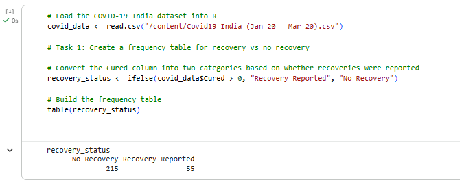
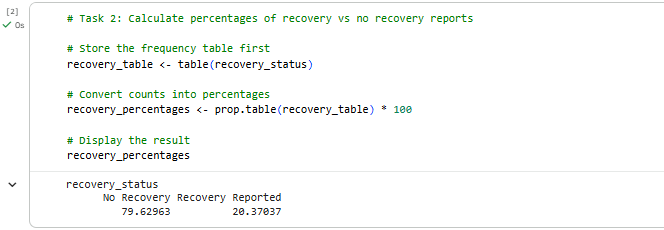
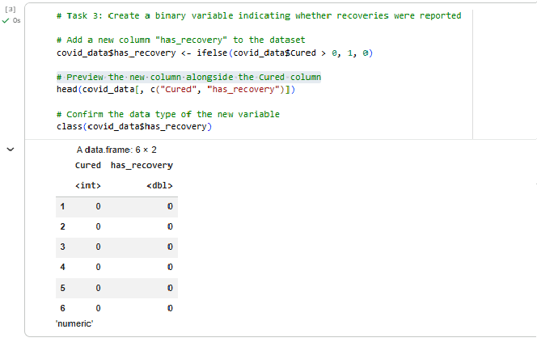
Reflection
This unit strengthened my understanding of R's data structures, particularly how data frames organise real-world datasets like the COVID-19 India data used in Unit 1. Applying frequency analysis in Data Activity 2 helped me understand how binary variables and proportions can reveal meaningful patterns in early pandemic reporting — specifically, that the vast majority of daily reports in this early period showed no recoveries, reflecting how new the outbreak was at the time.
Unit 3 – Data Management in R
Learning Outcomes
- Understand how to examine dataset and variables using R (and Python).
- Start to convert different variable types.
- Understand how to manage missing values.
Learning Activities
- Studied the different file types R can read (CSV, TXT, TAB, Excel, STATA, SPSS, SAS, .Rdata) and two methods for importing data (code-based and RStudio GUI).
- Practised examining whole datasets (
View(),names()) and specific variables (str(),class(),head(),summary()). - Studied approaches to handling missing values: Pairwise Deletion vs. Listwise Deletion, and the
na.rmargument in R. - Practised converting variable types (
as.factor(),as.character(),as.integer(),as.numeric()), including the important two-step conversion required when converting a Factor to Numeric (via Character first). - Reviewed how R saves data using the
write()function. - Completed Data Activity 3, creating and analysing new categorical variables on the COVID-19 India dataset.
Artefacts
COVID-19 Death Reporting and Case Level Analysis (Data Activity 3)
Created and analysed new derived variables on the COVID-19 India dataset. Key R
functions applied included ifelse(), table(),
factor(), cut(), and sort().
Key findings:
- Created a binary variable
has_deaths, converted to a labelled factor ("No Deaths" / "Deaths Reported"): 245 daily reports showed no deaths, 25 showed deaths reported. - Created a categorical variable
case_level(No Cases / Low Cases / Medium Cases / High Cases) based on total confirmed cases (Indian + Foreign nationals). - Built a frequency table for State/Union Territory and identified the top 10 states with the highest number of daily reports, with Kerala remaining the most frequently recorded state.
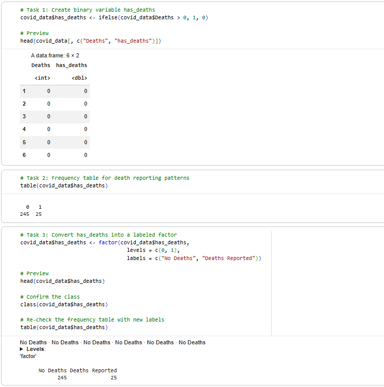
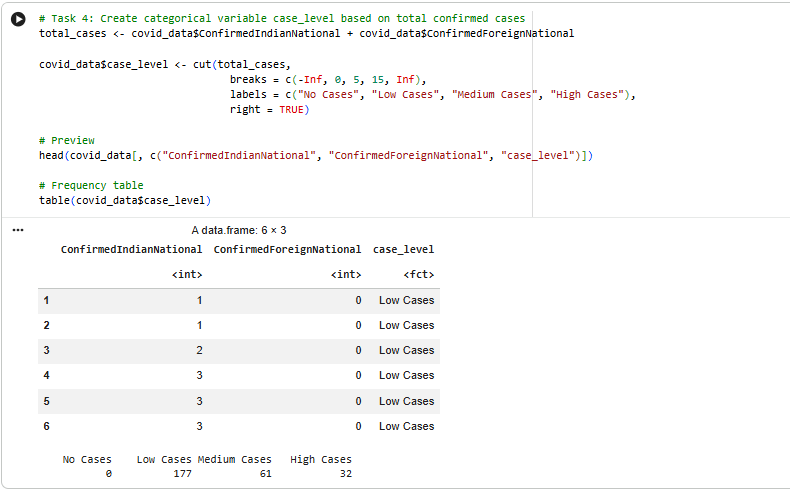
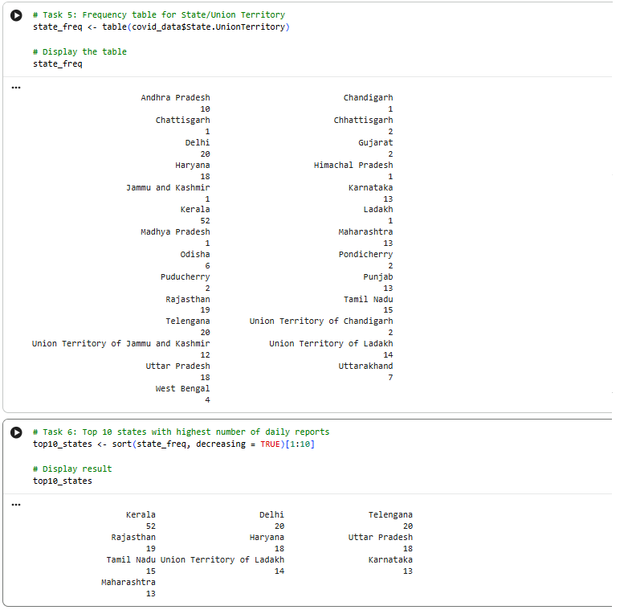
Reflection
This unit deepened my understanding of practical data management in R,
particularly the workflow of examining, converting, and deriving new variables
from raw data. Creating the has_deaths and case_level
variables reinforced how binary and categorical variables can be constructed from
numerical data using ifelse() and cut(), and how
converting these into labelled factors makes the data more interpretable. This
built directly on the frequency analysis skills from Unit 2, applying them to a
new dimension of the COVID-19 dataset.
Unit 4 – Probability and Sampling Methods
Learning Outcomes
- Understand and apply the fundamental rules of probability, including conditional probability.
- Identify and apply discrete probability distributions (Binomial, Poisson, Hypergeometric) in R.
- Identify and apply continuous probability distributions (Normal, Uniform, Exponential) in R.
- Distinguish between biased and unbiased sampling methods.
Learning Activities
- Studied the fundamentals of probability, including conditional probability.
- Studied discrete probability distributions — Binomial, Poisson, and Hypergeometric — and their corresponding R functions.
- Studied continuous probability distributions — Normal, Uniform, and Exponential — and their corresponding R functions.
- Studied sampling methods: biased approaches (convenience sampling, voluntary response sampling) and unbiased approaches (simple random, stratified random, multi-stage sampling).
- Attended Seminar 3 with Dr. Adrian Euler, covering probability distributions, quantiles, the Central Limit Theorem, and Type I/II errors, with an accompanying R script.
Artefacts
[No formative activity completed for this unit.]
Unit 5 – Producing Plots and Introduction to Calculus in R
Learning Outcomes
- Produce and interpret a range of plot types in R (bar, histogram, pie, scatter, boxplot, line).
- Understand the basic principles of differentiation and integration and their application in R.
Learning Activities
- Studied how to produce plots in R, including bar charts, histograms, pie charts, scatter plots, boxplots, and line graphs.
- Studied an introduction to calculus in R, covering basic differentiation and integration.
- Completed the initial post for Collaborative Discussion 1 (Units 5-7): redesigned Table II from Brown (1994) — reporting 550 GPs' responses to 24 statements on intrapartum care — as a set of stacked bar charts produced in R using
barplot(). - Completed Data Activity 4 using the COVID-19 India dataset, producing a bar chart, pie chart, histogram, and line chart in R.
Artefacts
1. Redesigning Brown (1994) Table II as Stacked Bar Charts (Collaborative Discussion 1 — Initial Post)
Table II in Brown's (1994) study reports how 550 general practitioners (GPs)
responded to 24 statements about intrapartum care, each split into Agree, No
opinion, and Disagree — 72 individual figures in one table. To make this more
accessible to a general reader, the underlying question behind each statement was
grouped into three themes: barriers discouraging GPs from providing intrapartum
care themselves, attitudes towards patient choice and place of birth, and views on
training, professional roles, and remuneration. Each theme was recreated as a
stacked bar chart in R using barplot(), plotting the three response
categories against each statement.
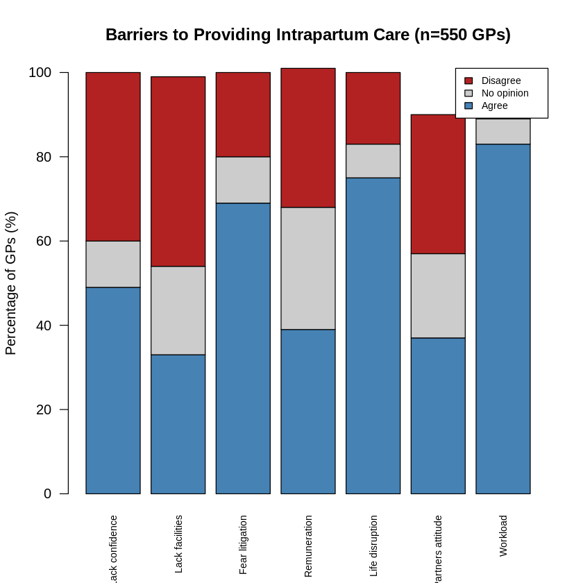
Figure 1. Barriers to Providing Intrapartum Care (n=550 GPs)
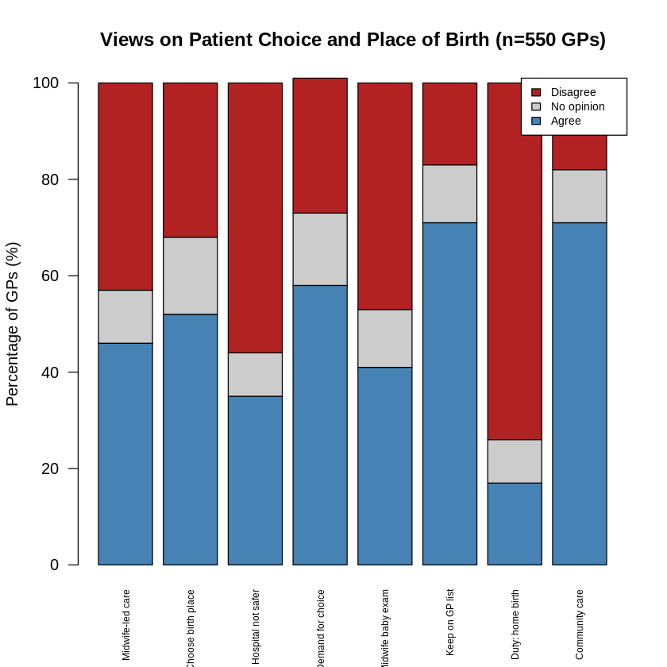
Figure 2. Views on Patient Choice and Place of Birth (n=550 GPs)
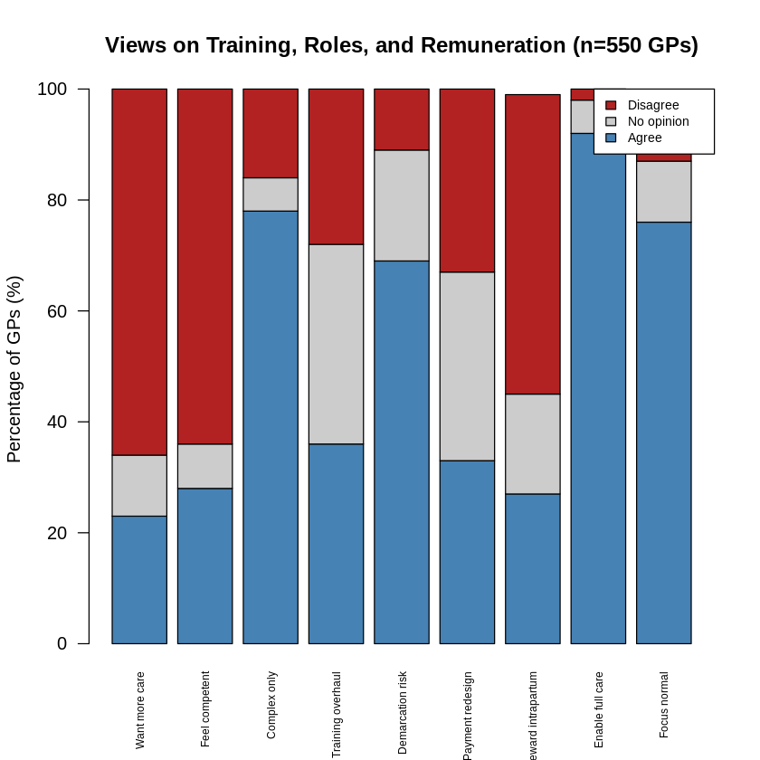
Figure 3. Views on Training, Professional Roles, and Remuneration (n=550 GPs)
Key findings:
- Figure 1 shows workload (83%), disruption to personal life (75%), and fear of litigation (69%) as the most widely agreed-upon reasons GPs avoid offering more intrapartum care.
- Figure 2 exposes a contradiction: 71% agreed a woman should not be removed from a GP's list for wanting a home birth, yet 74% disagreed that GPs should be personally obliged to arrange one.
- Figure 3 shows a similar pattern: 92% agreed that GPs wanting to provide full intrapartum care should be enabled to, but only 23% personally wanted to offer more themselves.
Reflection
This task changed how I think about simplifying data. Reducing a large table does not have to mean losing detail — grouping by a clear, consistent theme preserved the detail while making it far more accessible, directly resolving the concern that the original table's density made it hard to identify meaningful patterns. It also confirmed that the type of visualisation should match the structure of the data: since the responses were categorical, a bar chart suited them better than a scatter plot or histogram would have.
2. Plotting the COVID-19 India Dataset (Data Activity 4)
Produced four plot types in R on the COVID-19 India dataset (n = 270): a bar chart
of report frequency by state/union territory, a pie chart of case severity levels
(derived from ConfirmedIndianNational and
ConfirmedForeignNational), a histogram of recovery numbers
(Cured), and a line chart of the cumulative trend of total confirmed
cases over time. Key R functions applied included barplot(),
pie(), cut(), hist(),
aggregate(), and plot().
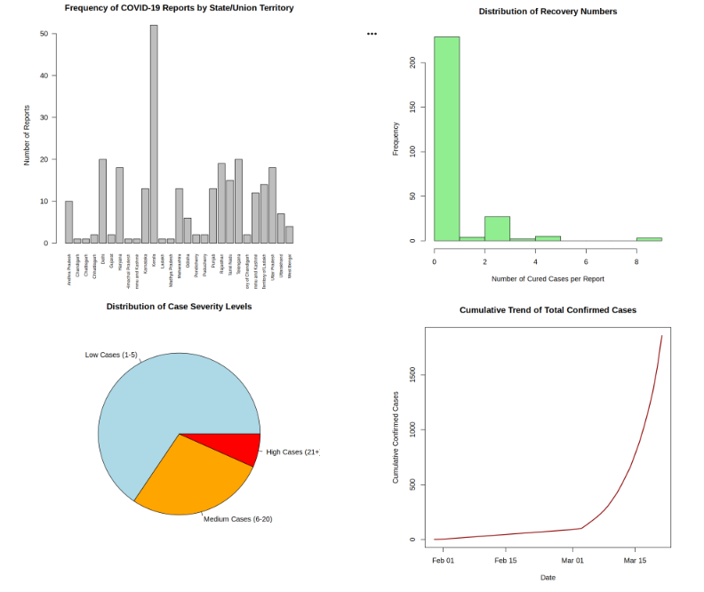
Key findings:
- Kerala was the most frequently recorded state (52 reports), followed by Telengana and Delhi (20 each), Rajasthan (19), and Uttar Pradesh and Haryana (18 each).
- Case severity was concentrated at the low end: 65.6% of reports fell into the Low Cases (1-5) band, 27.8% into Medium (6-20), and 6.7% into High (21+).
- Recovery numbers were heavily right-skewed: 215 of 270 reports (79.6%) recorded zero cured cases, consistent with the
has_recoveryfinding from Data Activity 2. - The cumulative confirmed-cases trend was flat through February, then rose sharply from early March, reaching 283 total confirmed cases by 21 March 2020.
Reflection
This activity highlighted how the same dataset can tell different stories depending
on which plot type is used. The bar chart and pie chart both worked with the
cross-sectional structure of the data (frequencies at a point in time), while the
line chart was the only one able to reveal the exponential growth pattern typical
of an early-stage outbreak — a pattern that would have been invisible in a static
summary table. Building the CaseSeverity variable also required a
judgement call, since the activity did not specify exact thresholds for "low",
"medium", and "high" case counts; this was a useful reminder that some analytical
decisions are left to the analyst and should be stated explicitly rather than
presented as if they were a fixed rule.
Note (added in Unit 9): the original line chart applied cumsum()
to values that were already cumulative, which inflated the total to 1,858.
Checking Kerala's daily values in Unit 9 showed the counts never decrease, so
the chart was rebuilt by summing states per day without cumsum(),
giving the correct total of 283. The bar chart also shows that some places
appear under two names (for example, "Ladakh" and "Union Territory of Ladakh"),
because the dataset changed its naming during the period; these were kept as
recorded rather than merged.
Unit 6 – Statistical Inference, Confidence Intervals, and Hypothesis Testing
Learning Outcomes
- Use confidence intervals for the statistical interpretation of data.
- Perform statistical analysis using a null or alternative hypothesis.
- Take a decision based on p-value and statistical significance.
Learning Activities
- Re-introduced inferential statistics and the Normal distribution, building on Unit 1.
- Studied confidence intervals and test statistics.
- Studied the null and alternative hypotheses, and the significance level and p-value.
- Completed two Peer Responses (max 300 words each) to the Collaborative Discussion 1 initial post from Unit 5.
- Attempted the Statistics Quiz.
Artefacts
[No submittable artefact for this unit — the Peer Responses and Statistics Quiz are not recorded as separate portfolio artefacts.]
Unit 7 – Parametric Tests
Learning Outcomes
- Apply parametric hypothesis tests, including the one-sample t-test, two-sample independent t-test, and paired t-test.
- Apply one-way ANOVA to compare means across more than two groups.
- Test for normality using the Shapiro-Wilk test.
- Apply the statistical knowledge developed across Units 1-7 in a timed, single-sitting assessment.
Learning Activities
- Studied the one-sample t-test, two-sample independent t-test, and paired t-test.
- Studied one-way ANOVA for comparing means across multiple groups.
- Studied the Shapiro-Wilk test for assessing normality.
- Worked through all eight topics in Dr. Adrian Euler's "Preparation for the Test" document, including the solved examples and practice problems A–H.
- Completed the 300-word Summary Post for Collaborative Discussion 1, responding to peer feedback on the initial post.
- Sat the Mathematical Test (25% of the module grade): a one-hour, single-sitting exam covering theory and calculation, completed by hand with a calculator and no R code.
- Completed Data Activity 5 using the Health_Data dataset in R (via Google Colab), covering descriptive statistics, a five-number summary with boxplot, and an independent two-sample t-test.
Artefacts
Health_Data Descriptive and Inferential Analysis (Data Activity 5)
Analysed the Health_Data dataset (n = 210) in R using the haven package
to import the SPSS (.sav) file. Calculated mean, median, and mode for the variables
sbp, dbp, and income (using a custom
getmode() function, since R has no built-in mode function), produced a
five-number summary and boxplot for income, and ran an independent
two-sample t-test to examine the association between systolic blood pressure (sbp)
and the presence or absence of peptic ulcer, after checking normality
(shapiro.test()) and equality of variances (var.test()).
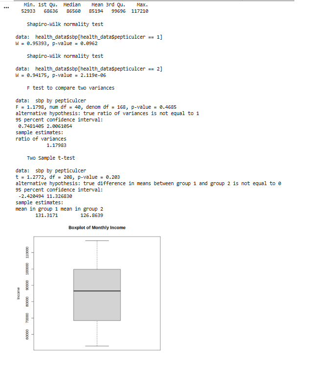
Key findings:
- sbp: Mean = 127.73, Median = 123, Mode = 120.
- dbp: Mean = 82.77, Median = 82, Mode = multimodal (74, 80, and 82 each occurring 13 times).
- income: Mean = 85,194.49, Median = 86,560.5; no meaningful mode, as values were essentially unique.
- Income five-number summary: Min = 52,933, Q1 = 68,636.5, Median = 86,560.5, Q3 = 99,696.25, Max = 117,210; no outliers were identified using the 1.5×IQR rule.
- Independent two-sample t-test (sbp by peptic ulcer status): t = 1.277, df = 208, p = 0.203 — no statistically significant association between sbp and the presence of peptic ulcer in this sample.
Reflection
This unit connected the theory of hypothesis testing directly to a practical
dataset. Working through Data Activity 5 required identifying that sbp is a
continuous variable and peptic ulcer status is a two-level categorical variable,
which made the independent two-sample t-test the appropriate choice. Writing a
custom mode function also taught me an important lesson about R: my first version
used which.max(), which silently returns only the first value when
several values are tied for the highest frequency. This produced a technically
valid but incomplete answer for dbp, masking the fact that it is
actually multimodal. Correcting the function to return all tied modes reinforced
that code can run without error while still giving an incomplete result. The
Shapiro-Wilk test also showed that one of the two groups was not normally
distributed, which was a useful reminder that real datasets rarely meet textbook
assumptions perfectly, though the large sample size still supported using a
parametric test in practice.
Unit 8 – Nonparametric Tests
Learning Outcomes
- Demonstrate application of nonparametric tests after assessing the normality test.
- Understand and perform nonparametric tests using R functions.
- Explain the results of nonparametric tests.
Learning Activities
- Studied the rationale for nonparametric tests: used when the quantitative dependent variable is not normally distributed, or when data are measured on nominal/ordinal scales.
- Studied the nonparametric-parametric equivalence table: Mann-Whitney U (↔ independent-samples t-test), Wilcoxon Signed Ranks (↔ paired t-test), Kruskal-Wallis (↔ one-way ANOVA), and Spearman's correlation (↔ Pearson's correlation).
- Completed Data Activity 6 using the Health_Data dataset, covering three tasks: calculating the mean, median, and mode of the
agevariable; testing whether median diastolic blood pressure (dbp) differs between diabetic and non-diabetic participants using the Mann-Whitney U test, after confirming non-normality in one group via Shapiro-Wilk; and testing whether systolic blood pressure (sbp) differs across four occupational groups (Govt Job, Private Job, Business, Others) using the Kruskal-Wallis test. - Completed a Scenario-Based Exercise comparing the training efficiency of three vendors, calculating group means, testing normality for each group, and applying one-way ANOVA with a Tukey HSD post-hoc test to identify which vendor(s) differed significantly at the 95% confidence level.
Artefacts
Health_Data Nonparametric Analysis (Data Activity 6)
Analysed the Health_Data dataset in R, calculating descriptive statistics for
age, then applying two nonparametric tests: the Mann-Whitney U test
(wilcox.test()) to compare diastolic blood pressure (dbp) between
diabetic and non-diabetic participants, and the Kruskal-Wallis test
(kruskal.test()) to compare systolic blood pressure (sbp) across four
occupational groups. Test choice in both cases followed from Shapiro-Wilk
normality checks (shapiro.test()).
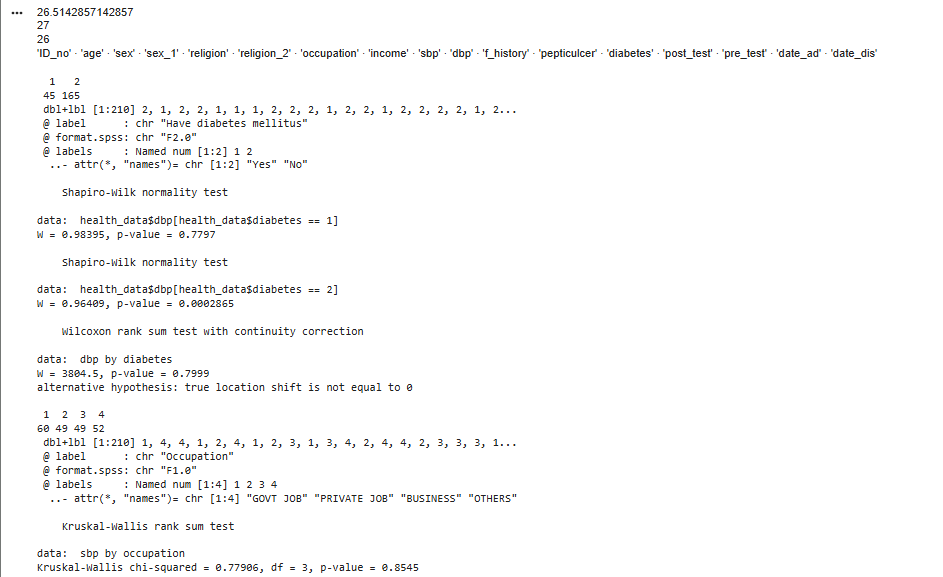
Key findings:
- age: Mean = 26.51, Median = 27, Mode = 26.
- Mann-Whitney U test (dbp by diabetes status): W = 3804.5, p = 0.7999 — no statistically significant difference in median dbp between diabetic and non-diabetic participants.
- Kruskal-Wallis test (sbp by occupation): chi-squared = 0.779, df = 3, p = 0.8545 — no statistically significant difference in sbp across the four occupational groups.
Reflection
This activity extended the parametric testing from Unit 7 to nonparametric
alternatives. Both test choices were driven by the Shapiro-Wilk normality
results: the diabetic-status comparison used the Mann-Whitney U test after one
group (non-diabetic) failed the normality assumption (p = 0.0002865), while the
Kruskal-Wallis test was applied across the four occupational groups without
individually confirming normality for each subgroup, reinforcing the more
cautious, distribution-free approach that nonparametric tests allow. A practical
lesson was the importance of verifying exact column names and coding
(diabetes, coded 1 = Yes / 2 = No) with names() and
str() before running any test — an initial assumption that the column
was named diabetic with text values "Yes"/"No" caused the code to fail
silently.
2. Scenario-Based Exercise — 95% Confidence Interval (Vendor Training Efficiency)
An HR organisation trained three groups of employees (n = 7 each) using three different vendors, and the task was to compare each vendor's mean training efficiency and determine which vendor showed a significantly higher improvement at the 95% confidence level. Group means were calculated, normality was checked for each vendor using the Shapiro-Wilk test, and — since all three groups were normally distributed — a one-way ANOVA was applied, followed by a Tukey HSD post-hoc test to identify exactly which vendor(s) differed significantly.
Key findings:
- Mean efficiency scores: Vendor 1 = 44.71, Vendor 2 = 51.00, Vendor 3 = 27.71.
- Shapiro-Wilk normality test: Vendor 1 (p = 0.4728), Vendor 2 (p = 0.7896), Vendor 3 (p = 0.7426) — all three groups normally distributed, supporting the use of one-way ANOVA.
- One-way ANOVA: F = 19.64, df = (2, 18), p = 2.98e-05 — a statistically significant difference exists among the three vendor means.
- Tukey HSD post-hoc test: Vendor 3 scored significantly lower than both Vendor 1 (p = 0.0009) and Vendor 2 (p = 0.0000286), while the difference between Vendor 1 and Vendor 2 was not statistically significant (p = 0.257).
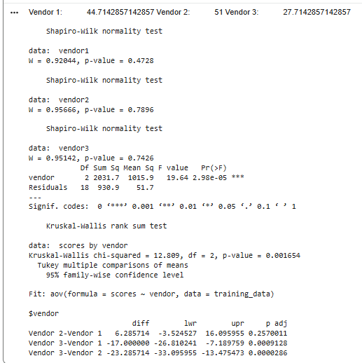
Reflection
This exercise reinforced the importance of checking assumptions before choosing a test rather than defaulting to the nonparametric approach used earlier in this unit: because all three vendor groups passed the Shapiro-Wilk normality test, the parametric one-way ANOVA was the correct choice here, even within a unit focused on nonparametric methods. It also highlighted why a significant ANOVA result is not the end of the analysis — the F-test only confirms that a difference exists somewhere among the groups, and the Tukey HSD post-hoc test was needed to pinpoint that Vendor 3 was the clear underperformer, while the higher raw mean for Vendor 2 over Vendor 1 was not, in fact, statistically significant given the small sample size per group (n = 7).
Unit 9 – Cross-tabulations and Chi-square Analysis
Learning Outcomes
- Understand and assess the association between two categorical variables.
- Create subsamples and derived categorical variables using R functions.
- Perform and interpret chi-square analysis on a contingency table.
Learning Activities
- Studied cross-tabulation (contingency tables) as a way of presenting counts for combinations of categories, and how the hypothesis is framed as independence between the row and column variables.
- Studied the chi-square (χ²) test as a nonparametric test for count data, comparing observed counts with the counts expected under the null hypothesis of independence, with degrees of freedom of (rows − 1) × (columns − 1).
- Practised building a contingency table and running
chisq.test()on the Superstore dataset (Segment × Category) as a warm-up: χ² = 1.148, df = 4, p = 0.887, so no association was found. - Completed Data Activity 7 using the COVID-19 India dataset, producing two cross-tables: Region × Case Severity Level, and Case Severity Level × Recovery Status.
Artefacts
COVID-19 India Cross-tabulation and Chi-square Analysis (Data Activity 7)
Three categorical variables were derived from the COVID-19 India dataset (n = 270).
Region grouped each state or union territory into North, Central,
East, West or South, following India's Zonal Councils. CaseSeverity
grouped total confirmed cases (Indian + Foreign nationals) into Low (1–5),
Medium (6–20) and High (21+), the same thresholds used in Data Activity 4.
RecoveryStatus split the Cured variable into No
Recovery (0) and Recovered (1+), following the has_recovery logic
from Data Activity 2. Cross-tables were built with table() and
addmargins(), row percentages with prop.table(), and
association was tested with chisq.test(). Because some expected
counts fell below 5, Fisher's exact test (fisher.test()) was added
as a check; this test was my own addition beyond the unit material.
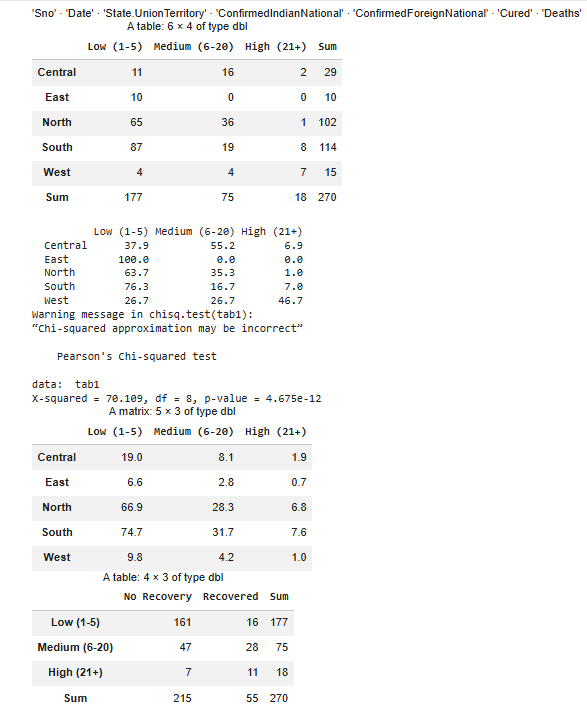
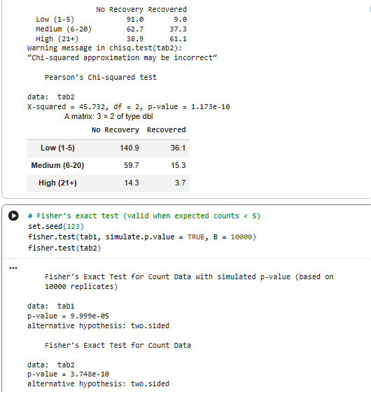
Key findings:
- Region × Case Severity: χ² = 70.11, df = 8, p < 0.001; Fisher's exact test (simulated, 10,000 replicates) p < 0.001. The West had the highest share of High-severity reports (46.7%), all East reports were Low (100%), and Central reports were mostly Medium (55.2%).
- Case Severity × Recovery Status: χ² = 45.73, df = 2, p < 0.001; Fisher's exact test p < 0.001. The share of reports with recoveries rose with severity: Low 9.0%, Medium 37.3%, High 61.1%.
- Five of the 15 expected counts in the first table, and one of the six in the second (High × Recovered = 3.7), were below 5, which triggered R's warning that the chi-square approximation may be incorrect.
Reflection
This activity showed me that a very small p-value is only the start of the interpretation. Both tables showed strong associations, but the second result does not mean that states with more cases recover better. The counts in this dataset are cumulative, so a state with many cases has usually been reporting for longer, which leaves more time for recoveries to appear. Time is acting as a confounding variable here. The same states also appear on many different days, so the reports are not fully independent, which weakens one of the chi-square test's own assumptions.
Two practical lessons stood out. First, R warned that the chi-square approximation may be incorrect, and checking the expected counts explained why. Rather than ignoring the warning, I confirmed the results with Fisher's exact test. Second, my first run totalled 269 reports instead of 270. The cause was a misspelt state name in the raw data ("Chattisgarh"), which my region mapping did not recognise. As in Data Activities 5 and 6, the code ran without an error but gave an incomplete answer, and only checking the totals revealed it. The region groups and severity thresholds were also my own decisions, so I have stated them openly rather than presenting them as fixed rules.
Unit 10 – Correlation and Regression
Learning Outcomes
- Measure the strength and direction of the relationship between two numerical variables.
- Check normality before choosing between Pearson's and Spearman's correlation.
- Understand the principles of simple linear regression.
Learning Activities
- Studied correlation as a measure of the relationship between two variables, and the difference between independent and dependent variables.
- Studied the Anderson-Darling normality test (
ad.test()from thenortestpackage) as a check before runningcor.test(). - Studied simple linear regression, where predictions of Y plotted against X form a straight line.
- Completed Data Activity 8 using the Health_Data dataset, measuring the correlation between systolic and diastolic blood pressure and producing a scatter plot.
Artefacts
Systolic and Diastolic Blood Pressure Correlation (Data Activity 8)
The Health_Data dataset (n = 210) was imported with the haven
package. Normality of sbp and dbp was checked with the
Anderson-Darling test, and the correlation was then measured with
cor.test() using both Pearson's and Spearman's methods. A scatter
plot was produced with plot(), with a fitted regression line added
using abline(lm()).
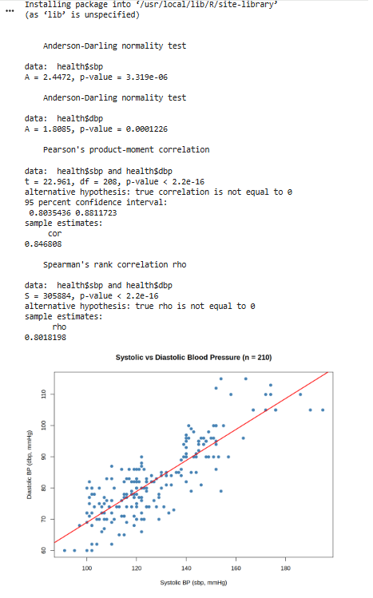
Key findings:
- Anderson-Darling test: neither variable was normally distributed (sbp: A = 2.447, p < 0.001; dbp: A = 1.809, p < 0.001), so Spearman's correlation was treated as the main result.
- Spearman's rho = 0.802, p < 0.001: a strong positive relationship between systolic and diastolic blood pressure.
- Pearson's r = 0.847, 95% CI [0.804, 0.881], t = 22.96, df = 208, p < 0.001, which closely agreed with the Spearman result.
- The scatter plot showed points rising together along the fitted line, with readings grouped in vertical bands at round values such as 120 and 140 mmHg.
Reflection
This activity showed me why the normality check has to come before the choice of test. Both variables failed the Anderson-Darling test, so Spearman's correlation was the correct main result, while Pearson's r was reported alongside it as a check. The two values were close (0.802 and 0.847), which made me more confident in the finding. I also noticed that, with 210 participants, the p-value alone says very little, because even a weak correlation would be significant with this many observations. The strength of r and the narrow confidence interval were more informative than the p-value itself.
A strong correlation does not mean that one pressure causes the other. Both are readings of the same cardiovascular system, so they are expected to rise together. The scatter plot also revealed something the numbers did not: many readings sit on round values such as 120 and 140 mmHg, which suggests the measurements were rounded when recorded. This reminded me that plotting the data can show features of how it was collected that a single coefficient hides.
Unit 11 – Regression Analysis
Learning Outcomes
- Explain the concept of regression.
- Interpret model fit, statistical significance, and coefficient interpretation.
- Create scatter plots for model building.
- Illustrate the generalised linear model in R.
Learning Activities
- Studied the difference between correlation and regression: in correlation it does not matter which variable is X and which is Y, but in regression it does, because predicting Y from X gives a different line from predicting X from Y.
- Studied least squares regression, residuals, R², and the assumptions of linear regression: linearity, residuals with a mean of zero, constant variance, normally distributed residuals, and independent residuals.
- Completed Data Activity 9 using the Health_Data dataset, building a simple linear regression model to predict diastolic blood pressure from systolic blood pressure and interpreting it at the 5% significance level.
Artefacts
Predicting Diastolic from Systolic Blood Pressure (Data Activity 9)
A simple linear regression model was fitted in R with lm(dbp ~ sbp)
on the Health_Data dataset (n = 210). Results were read with
summary() and confint(). The model assumptions were
then checked using the mean of the residuals, the Anderson-Darling test on the
residuals (ad.test()), and the four diagnostic plots from
plot(model).
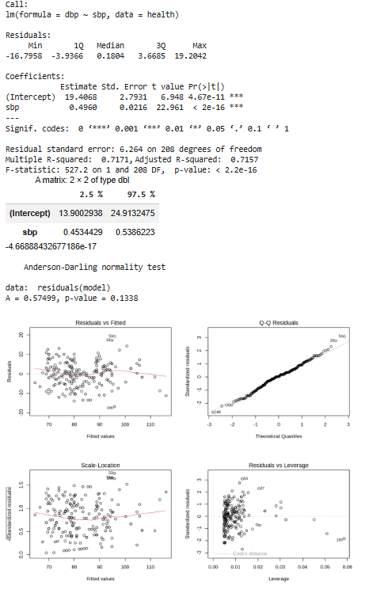
Key findings:
- Estimated regression equation: dbp = 19.41 + 0.496 × sbp.
- Slope: b₁ = 0.496, 95% CI [0.453, 0.539], t = 22.96, p < 0.001. At the 5% level, H₀ (b₁ = 0) is rejected: systolic BP is a significant predictor of diastolic BP. Each 1 mmHg rise in sbp predicts a rise of about 0.5 mmHg in dbp.
- Model fit: R² = 0.717 (adjusted R² = 0.716), so systolic BP explains about 72% of the variation in diastolic BP. F(1, 208) = 527.2, p < 0.001.
- Residual standard error = 6.26 mmHg, meaning typical predictions miss the observed value by around 6 mmHg.
- Assumption checks: the mean of the residuals was effectively zero; the Anderson-Darling test did not reject normality of the residuals (A = 0.575, p = 0.134); the residual plots showed no clear pattern or change in spread, and no point exceeded Cook's distance.
- Example prediction: a patient with sbp = 120 mmHg has a predicted dbp of about 78.9 mmHg.
Reflection
This activity connected directly to Data Activity 8. The R² of 0.717 is the square of the Pearson correlation found there (0.847² ≈ 0.717), which made the link between correlation and regression concrete for me rather than just a rule in the notes. The most important lesson was about where the assumptions apply. In Unit 10, neither sbp nor dbp was normally distributed, and I first expected that to be a problem here. However, linear regression assumes that the residuals are normal, not the variables themselves, and the residuals passed the Anderson-Darling test.
The output also showed me that a significant result is not the same as a precise one. The slope is highly significant, yet a typical prediction is still around 6 mmHg away from the real value, and about 28% of the variation in diastolic BP is not explained by systolic BP. In a clinical setting, a 6 mmHg error could change how a reading is classified, so this model would support a decision rather than replace a direct measurement. The equation is also an estimate from one sample, and it should not be used for sbp values outside the observed range.